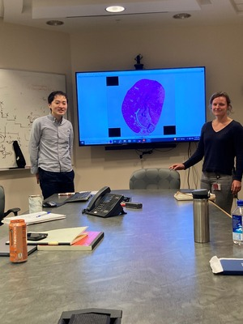
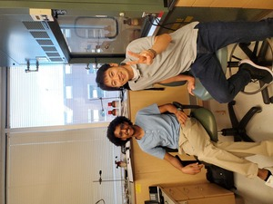
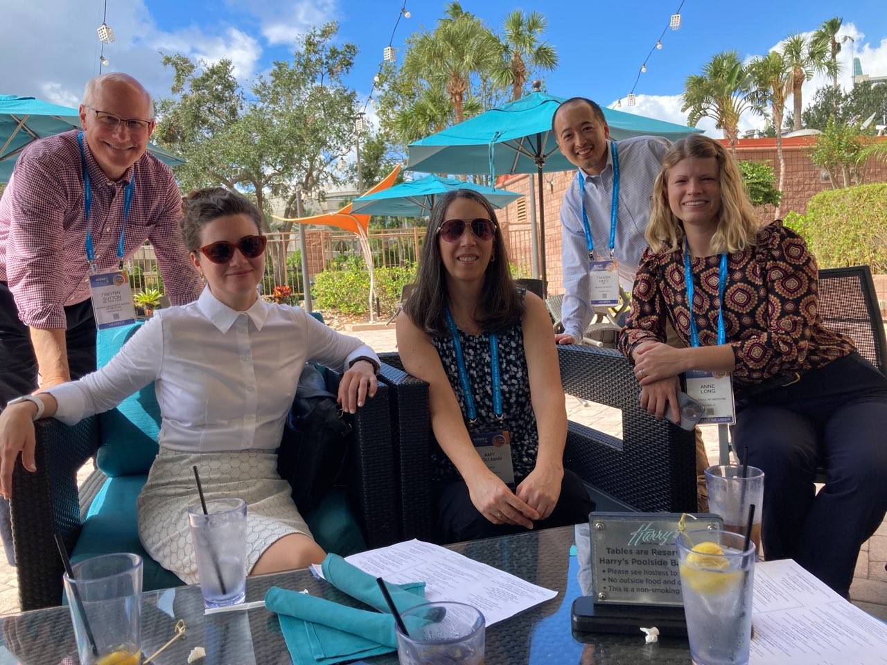
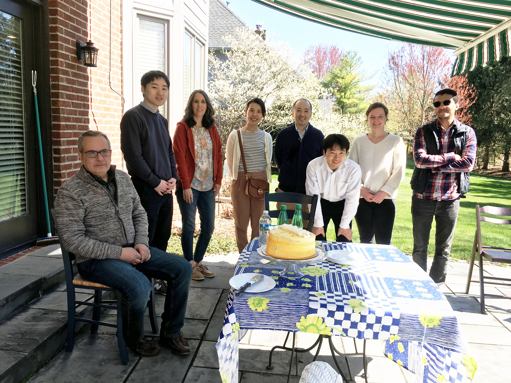

- Arvin Halim (PhD candidate at IU)
- Ashley Kidwell (MD/PhD candidate at Texas A&M)
- Bernard Maier (Assistant research professor at IU Hematology/Oncology)
- Danielle Janosevic (Assistant professor at IU Nephrology)
- David Rodriguez (graduate student at IU)
- Franziska Blender (University of Potsdam)
- Kevin Ni (Internal medicine resident at University of Colorado)
- Madelyn Chadwick (Purdue University)
- S. Louise Pay (writer/editor)
- Shiv Pratap Singh Yadav
- Thomas McCarthy (industry)
- Zain Siddiqui (Indiana University)
About the Hato lab
The long-term goal of the Hato Laboratory is to develop targeted therapies for acute kidney injury in sepsis. Sepsis-induced kidney injury is associated with high mortality and there is no specific therapy available at the bedside beyond supportive care. The lack of therapeutic options is due in part to incomplete understanding of the temporal evolution of sepsis pathology. Ongoing research in the laboratory focuses on defining the timeline of sepsis-induced kidney injury using a combination of imaging and sequencing tools. In particular, investigators in the laboratory are interested in understanding the molecular link between the early-phase inflammation and late-phase organ shutdown. In parallel, the laboratory aims to develop novel therapeutic approaches. For example, they have reported the first example of a protein cage nanoparticle that can be targeted to renal proximal tubules through glomerular filtration, and an antisense oligonucleotide that targets an upstream open reading frame to boost translation in the kidney.
Principal Investigator
Takashi Hato, MD, completed his postgraduate clinical training in both Japan and the United States. Following his nephrology fellowship training at Indiana University, he worked as a hospitalist. In 2016, he joined the faculty at Indiana University, Division of Nephrology as Assistant Professor. Dr. Hato is the recipient of several awards including The Indiana University Board of Trustees Teaching Award, Indiana University Department of Medicine Outstanding Early Career Investigator Award, and Ralph W. and Grace M. Showalter Research Trust Fund Showalter Scholar. His research interests are centered on the discovery of targeted therapies for sepsis-induced organ failure. His research has been funded by the NIH and VA.
Links
Research Team
- Pierre Dagher (co-PI on multiple projects)
- Amy Zollman (lab manager)
- Jered Myslinski (bioinformatician)
- Annie Long (The Lilly Graduate Research Advanced Degrees program)
- Shinichi Makino (research fellow)
- Segewkal Heruye (research fellow)
- Nobuhiro Kanazawa (research fellow)
- Caroline Martens (visiting scholar)
2024 Summer Students
- Annabelle White
- Ryan Tsai



